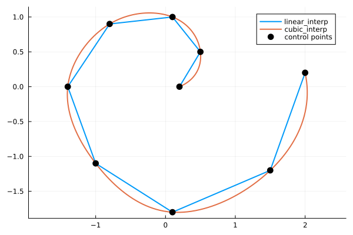

Custom Value Types (Duck Typing)
FastInterpolations supports interpolation with arbitrary value types — not just Real and Complex. Any type that supports the required arithmetic operations can be used as the value type Tv.
Internally, every interpolant separates two type roles:
- Grid type: Internally
<: AbstractFloat(Float64,Float32). Integer grids are automatically promoted. Used for grid coordinates, spacings, and search. - Value type (
Tv): Unconstrained. Can be any type supporting the 4 operations below.
Required Operations — Vector Space Axioms
Only 4 operations are needed. These are sufficient for every interpolation method, boundary condition, derivative, integration, ND, Series, and vector calculus operation in the library.
+(::Tv, ::Tv) → Tv # value addition
-(::Tv, ::Tv) → Tv # value subtraction
*(::Real, ::Tv) → Tv # left scalar multiplication
*(::Tv, ::Real) → Tv # right scalar multiplicationThese are the standard vector space axioms — addition, subtraction, and scalar multiplication over Real scalars. Nothing else is required. Using Real (rather than separate AbstractFloat + Integer methods) is simpler and also covers Rational, ForwardDiff.Dual, and other Real subtypes automatically.
Conditional: muladd
The library uses muladd extensively in hot evaluation kernels for FMA (fused multiply-add).
Tv <: Number(or<: Real): You must definemuladd. Julia'smuladd(::Number, ::Number, ::Number)tries type promotion, which fails withoutpromote_rule.Tvis not<: Number: Not required — Julia's generic fallbackmuladd(x,y,z) = x*y+zfires automatically. However, if your inner type supportsmuladd, defining it enables FMA and improves performance.
# Signatures used in hot paths:
Base.muladd(::Real, ::Tv, ::Tv) → Tv
Base.muladd(::Tv, ::Real, ::Tv) → TvExample: Path Interpolation with SVector
SVector already satisfies the 4 operations, so it works out of the box.
using FastInterpolations
using StaticArrays
using Plots
# 9 waypoints in 2D (spiral-like path)
t = [0.0, 0.6, 1.2, 1.8, 2.4, 3.0, 3.6, 4.2, 4.8]
pts = SVector{2, Float64}[
SVector(0.2, 0.0), SVector(0.5, 0.5),
SVector(0.1, 1.0), SVector(-0.8, 0.9),
SVector(-1.4, 0.0), SVector(-1.0, -1.1),
SVector(0.1, -1.8), SVector(1.5, -1.2),
SVector(2.0, 0.2),
]
tq = range(first(t), last(t), length=200)
linear_path = linear_interp(t, pts, tq)
cubic_path = cubic_interp(t, pts, tq)
linear_x = getindex.(linear_path, 1)
linear_y = getindex.(linear_path, 2)
cubic_x = getindex.(cubic_path, 1)
cubic_y = getindex.(cubic_path, 2)
pts_x = getindex.(pts, 1)
pts_y = getindex.(pts, 2)
p = plot(linear_x, linear_y; label="linear_interp", lw=2, aspect_ratio=:equal);
plot!(p, cubic_x, cubic_y; label="cubic_interp", lw=2);
scatter!(p, pts_x, pts_y; label="control points", ms=6, color=:black);
Defining a Custom Type
struct MyStruct
val::Float64
end
# The 4 required operations — nothing else needed
Base.:+(a::MyStruct, b::MyStruct) = MyStruct(a.val + b.val)
Base.:-(a::MyStruct, b::MyStruct) = MyStruct(a.val - b.val)
Base.:*(a::Real, b::MyStruct) = MyStruct(a * b.val)
Base.:*(a::MyStruct, b::Real) = MyStruct(a.val * b)
# Optional: muladd for FMA performance (works without this, but faster with it)
Base.muladd(a::Real, b::MyStruct, c::MyStruct) = MyStruct(muladd(a, b.val, c.val))
Base.muladd(a::MyStruct, b::Real, c::MyStruct) = MyStruct(muladd(a.val, b, c.val))
# Everything works
x = range(0.0, 1.0, 10)
y = [MyStruct(sin(xi)) for xi in x]
constant_interp(x, y, 0.5) # → MyStruct(...)
linear_interp(x, y, 0.5) # → MyStruct(...)
quadratic_interp(x, y, 0.5) # → MyStruct(...)
quadratic_interp(x, y, 0.5; bc=Left(Deriv1(MyStruct(0.0)))) # → MyStruct(...)
cubic_interp(x, y, 0.5) # → MyStruct(...)
cubic_interp(x, y, 0.5; bc=Deriv1(MyStruct(0.0))) # → MyStruct(...)
cubic_interp(x, y, 0.5; bc=ZeroCurvBC()) # → MyStruct(...)Tips
- Explicit Deriv BCs: Pass
Deriv1(MyStruct(val))— notDeriv1(val).